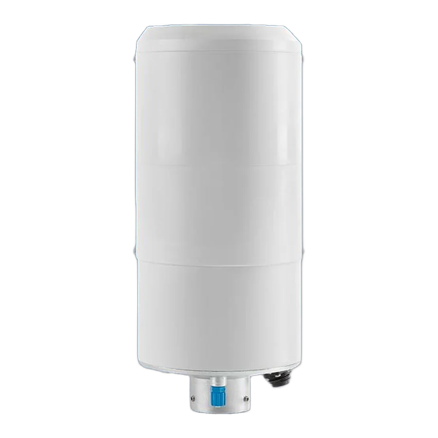
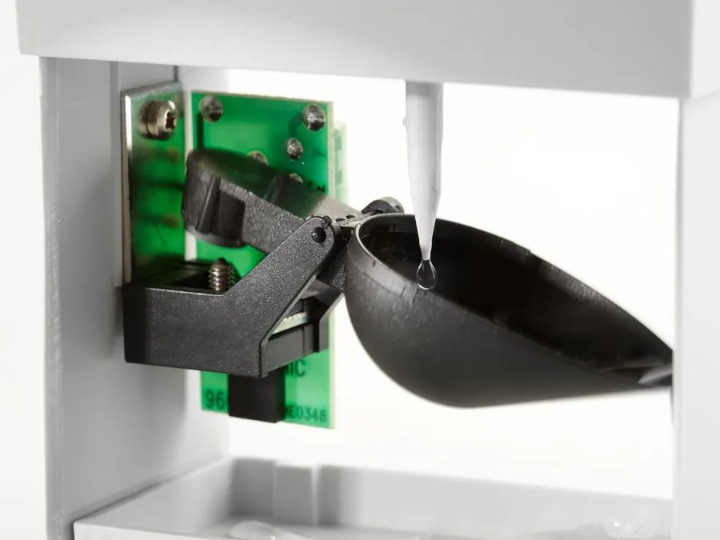

Pluviométrie · Pluviomètres
Pluviomètre météoPluviomètre à auget basculant aux standards WMO
Le pluviomètre aux standards de l’Organisation météorologique mondiale (WMO). Entonnoir profond contre les éclaboussures et l’évaporation, orifice à bord vif, drain pour collecter la pluie : pour les stations météorologiques et les mesures de référence.
- Orifice
- 200 cm², bord vif
- Résolution
- 0,2 · 0,25 · 0,5 mm
- Standards
- WMO
- Durée de vie
- 10 à 20 ans
Idéal pour
- Stations météorologiques
- Mesures de référence
- Bassins versants
- Collecte de la pluie
- Sites exposés
LeasingDisponible à l’achat ou en leasing, par mensualités. Comment ça marche
Points forts
Une mesure de pluie de référence, conçue pour durer.
- Standards WMOEntonnoir profond, orifice à bord vif, drain et filtre.
- Collecte de la pluieLe drain permet de récupérer l’eau pour analyse.
- Ne craint pas le gelLe pluviomètre ne retient pas l’eau de pluie.
- Circuit protégéRelais reed testés un à un, électronique protégée des conditions extrêmes et de l’eau de mer.
- Contacts NO et NFSur bornier 4 pôles, pour automate ou enregistreur.
- Base aluminiumMontage sur poteau de 50 mm de diamètre.
Principe de mesure
La pluie est collectée dans l’entonnoir, puis guidée par un filtre jusqu’à l’auget, maintenu par un aimant. Quand il est plein, l’auget bascule et se vide en moins de 300 ms, puis revient en position.
Chaque basculement actionne magnétiquement le contact : une impulsion correspond à une quantité de pluie fixe. L’eau est ensuite évacuée par un drain qui permet de la collecter.
- Pluie mesurable jusqu’à 2,4 mm/min (0,2 mm) et 6 mm/min (0,5 mm)
- Courbe d’intensité connue pour les pluies exceptionnelles
- Installation à 1,5 m du sol au maximum, à l’abri des vents
Applications
Pour les mesures de pluie de référence.
- Stations météorologiquesMesure conforme aux standards WMO.
- Bassins versantsSuivi des précipitations pour l’hydrologie.
- Collecte pour analyseRécupération de l’eau de pluie par le drain.
- AutosurveillancePluviométrie associée aux mesures de réseau.
Caractéristiques
Pluviomètre livré avec sa base de montage.
| Principe | Auget basculant, contact par relais reed |
|---|---|
| Orifice | 200 cm², bord à angle vif |
| Résolution | 0,20 · 0,25 · 0,50 mm |
| Pluie mesurable (12 contacts/min) | 2,4 · 3,0 · 6,0 mm/min selon la résolution |
| Sorties | 1 contact NO + 1 contact NF, bornier 4 pôles |
| Matériau | Plastique résistant aux UV, au gel et à la chaleur |
|---|---|
| Diamètre | 182 mm (orifice Ø 159,6 mm) |
| Hauteur | 420 mm |
| Poids | 1 300 g |
| Base | Aluminium, pour poteau Ø 50 mm |
| Durée de vie | 10 à 20 ans |
Téléchargements
Questions fréquentes
Les questions que nous posent le plus souvent les exploitants et les bureaux d’études.
Quelle différence avec le pluviomètre professionnel ?
Le pluviomètre météo répond aux standards WMO (entonnoir profond, orifice à bord vif) et dispose d’un drain pour collecter la pluie. Le pluviomètre professionnel est plus compact et propose aussi la résolution de 0,1 mm.
Craint-il le gel ?
Non : il ne retient pas l’eau de pluie. Ses matériaux résistent au gel, à la chaleur et aux UV.
Comment se fixe-t-il ?
Sa base en aluminium se monte sur un poteau de 50 mm de diamètre, à 1,5 m du sol au maximum, à l’abri des vents violents.
Peut-on récupérer l’eau collectée ?
Oui, par le drain, pour une analyse.